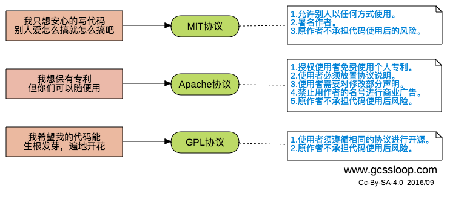
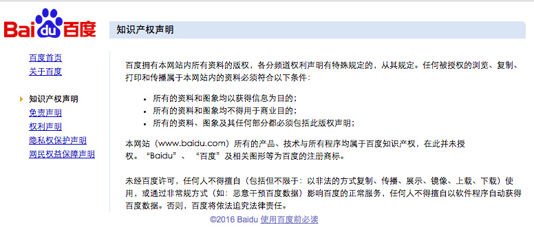
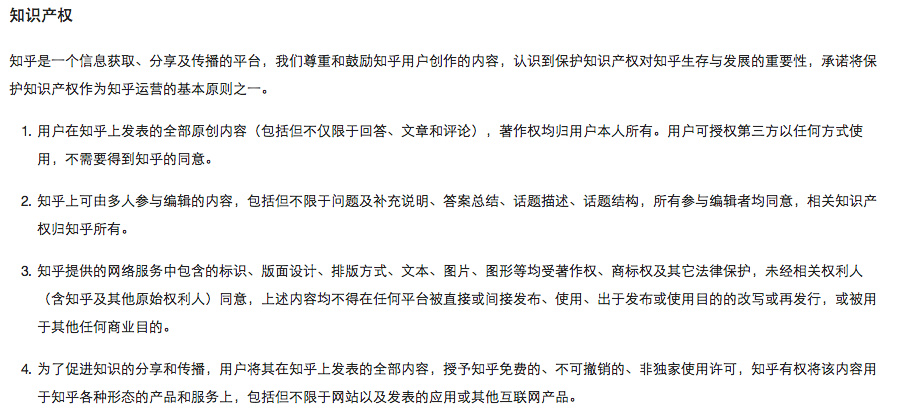
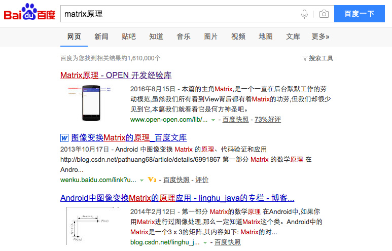

[转]程序员不可不知的版权协议
前一段时间知乎上关于版权问题的讨论有不少，例如这个 新浪微博上的「知乎大神」是谁？涉嫌侵权吗？, 而且最近喜马拉雅FM也因为背景音乐版权问题导致很多栏目被下架和推迟更新，而我作为一个喜欢分享的魔法师，也遇到过一些版权相关方面的问题，刚好借此机会向大家科普一下开源协议和知识共享协议。
开源协议
相信很多小伙伴在开发的时候都默认遵循 不重复造轮子(偷懒) 这一原则，只要有了思路就马上在GitHub搜索一下，看看是否有人已经做了，如果已经有做好的，自然就不客气啦，拿过来修改一下就能用，不由得心中暗喜，又省了好多时间能用来把妹(LOL)。然而你可能没注意到，在诸多的开源代码中存在一些陷阱(约束)，就是开源协议，下面就带大家了解一下开源协议。
为什么要添加开源协议?
首先是对作者的保护，防止知识成果被恶意利用。
- 开源协议中一般都包含免责声明(禁止代码的作者承担代码使用后的风险及产生的后果)，比如你开源了一个破解智能锁的代码，如果有人利用这个去盗窃导致他人损失，你是无需承担责任的。
其次是对使用者的保护，方便使用者。
- 使用者一看就知道自己允许进行哪些操作，不允许进行哪些操作。
- 未添加协议的代码默认是作者保留所有权利的(_对此不同国家的法律可能稍微存在区别_)，这就像一颗定时炸弹，如果你在项目中使用了这一份没有协议的代码，原作者只要能证明你未经许可使用了他的代码，是能够起诉你的。
如何选择合适的开源协议?
由于开源协议种类众多，作为普通人很难搞懂它们之间的区别，即便是常见的协议大家也不完全知道协议的内容，那么如何快速的选择一款适合自己的协议呢？如果你是一个怕麻烦的人，下面的建议或许对你有有帮助。

目前使用最多的是MIT协议，而我(GcsSloop)常用的则是 Apache License 2.0 协议，因为这样可以帮助我知道有哪些开源项目使用了我的内容，以及进行了何种修改，有利于我改进自己项目。
之所以采用这个协议，而不使用 GNU GPLv3 ，是因为 GNU GPLv3 使用者按照相同的协议开源，而 Apache License 2.0 相对比较宽松，你可以私用，也可以闭源，但是如果开源项目使用到的时候，只需要放置一下版权声明以及修改声明即可。
选择一个开源软件协议
上面介绍的三种协议是最常用的几种，如果你想选择更多的开源协议可以到 选择一个开源软件协议 查看，这个网站是GitHub创建的，我做了一些微小的翻译工作，原网址 Choose an open source license 如果你觉得我的那些部分翻译不准确可以到 ChooseLicense.github.io 来给我提建议，如果直接提交 Pull Request 就更好了。
注意：不论你采用何种协议，一旦你在一些平台上发布你的内容，你就默认接受了该平台的协议，这一点尤其需要注意，例如GitHub上，默认允许他人查看和fork你的开源项目。
知识共享协议
知识共享协议和开源协议均属于版权协议的一种，常用于数据、多媒体、网站、文章等内容，是作者保障自己权益的一道屏障。
知识共享协议(Creative Commons，也称为CC协议) 有很多版本，不过需要注意的是，开源协议同样适用于大部分内容，例如：你的文章等作品，但是知识共享协议则不适用于开源软件。
注意：虽然你可以采用知识共享协议来保护你的内容，但是一旦你在某些平台上发布你的内容，你就默认接受了该平台的协议，这一点尤其需要注意。
下面我们来看两个例子，仅看知识产权部分的：


稍微看一些就知道，你在百度上发表的任何东西，不论是百度知道，百度文库或者是贴吧，百度自动拥有版权，可以随意使用这些内容，而在知乎上的回答，文章等则是作者拥有版权，当然了，前提是你为原创作者。
选择一个知识共享协议
你可以到 creativecommons.org 为自己选择一个合适的知识共享协议。
我的文章等其他非代码内容一般会采用 知识共享 署名-非商业性使用-禁止演绎 4.0 国际 许可协议。你在我的 AndroidNote 和我的 个人网站 底部均可以看到声明。
这在知识共享协议里面算是比较严苛的一个协议了，它允许所有人在非商业用途下免费转载我的文章，但必须：
- 保持原文，不作修改。
- 明确署名，即至少注明
作者：GcsSloop字样以及文章的原始链接，且不得使用rel="nofollow"标记。 - 商业用途可以联系本人，需要征得本人同意。
下面解释一下我为什么要采用这一个协议：
禁止商用
这个毋庸置疑，为了保证自身的利益，写一篇文章需要经过选材，制作图片，书写，排版，排查错误等诸多步骤，其中每一步都凝聚了作者大量的心血，如果被别人一声不吭拿去为自己赚钱了，作者岂不是要哭晕在厕所。
保持原文
之前又一个文章中因为一个公式问题引起了一些混乱，那篇文章中本身公式是正确的，可能是因为书写方式问题，导致一些小伙伴错认为是有误的，而且有小伙伴在fork我的仓库后修改了文章中的公式，之后有小伙伴讨论这个公式的问题，因为担心小伙伴看到的是错误版本，在这个问题上浪费了很多时间。所以我的文章转载均要求保持原文，如果你觉得我的文章中有错误的地方，可以到评论区或者其他地方告诉我。
明确署名
保持署名和原始链接可以保证其他人能找到原文的作者，如果文章出现了问题，能够反馈给原作者，以保证文章内容正确，不误导以后阅读的人。
关于参考链接
我们人类之所以发展这么快，是因为有前人的努力，我们都是站在巨人肩膀上的人，书写文章也不例外，有很多需要借鉴他人的地方，如果借鉴了他人的想法或者成果，建议在文末加上参考链接。除了能够帮助读者更好理解知识的来源外，也可以顺便给这些人带来一些名气。
我书写参考链接的规则一般是这样的，我借鉴了他人的想法，成果，或者一部分成果，我都会在文末添加上文章地址。
有时候有小伙伴会反馈说，我的文章和我参考链接里面的文章有些地方存在冲突，这是因为我并没有把原文中这一部分作为参考。如果一些文章的理论本身就是错误的，但思路是正确的，或者部分内容是正确的，我使用了这些内容，同样会将其加入我的参考链接中。
关于抄袭和洗文(洗稿)
抄袭（英语：plagiarism），亦称作剽窃，根据教育部国语辞典定义[1]，为抄录他人作品以为己作。对于原著未经或基本未经修改的抄录，这是一种侵犯著作权的行为。(引用自维基百科)
抄袭属于一种比较低级的方式，更高级一点的一般称为洗文或者洗稿，常见洗稿有以下的方式:
第一种是打乱排版排版，然后用近似的语句来表达原文的内容。
第二种是按照原作者类似的风格来书写一件类似的事情，对其中对内容稍作修改。
第三种主要针对不允许转载的文章，先抄袭到某某论坛或者不知名网站然后转载一下标注为某某论坛(网站)，轻松抹去原作者信息。
这类洗稿文章是让原作者很头疼的东西，有些新司机技术不纯熟，一眼就能看出是洗稿，而有些老司机，洗出来的文章很难辨识，也很难维权。但如果你有时间和抄袭者正面刚的话，还是有很大机会能得到正义的支持的，毕竟群众的眼睛都是雪亮的，不过这对自身又有什么意义呢？浪费大量时间而且没有任何回报。
正是因为抄袭成本低而维权成本高，才导致了目前存在大量抄袭的内容，百度搜索结果尤其明显，很多排名靠前的技术文章都不是作者原文，而是被一些大平台转载(抄袭)过去的。相比之下Google就好很多了，而且举报抄袭处理速度也很快。
以我之前发过的一篇文章为例:

在Google搜索结果中第一条就是我的原文地址，而在百度搜索结果第一条则是转载(抄袭)的文章，我从未在该平台投稿过该文章，这篇转载(抄袭)文章虽然在文末给出了原文地址，但非超链接形式，没有作者署名，该网站也投放有广告，因为本文产生的广告收益不会给作者一分钱，这实际上已经严重违反了我的知识共享协议。
你问我为啥不举报？
主要是因为这篇转载还算良心，至少排版不乱，能够帮助到一些初学者，如果是肆意篡改原文链接，排版混乱，而且插入大量广告，严重影响观看效果的，我一定见一个举报一个。
结语
为自己选择一个合适的 开源协议 或者 知识共享协议， 虽然大部分时间并没有什么用，但至少能在一定程度上保护自身的权益。
最后建议多用Google，远离百度。
相关网站
转载请注明来源，欢迎对文章中的引用来源进行考证，欢迎指出任何有错误或不够清晰的表达。可以在下面评论区评论，也可以邮件至 [ yehuohan@gmail.com ]
文章标题:[转]程序员不可不知的版权协议
本文作者:z000tech
发布时间:2017-11-01, 11:08:40
最后更新:2020-07-16, 17:58:06
原始链接:http://yehuohan.github.io/2017/11/01/杂记/程序员不可不知的版权协议/版权声明: "署名-非商用-相同方式共享 4.0" 转载请保留原文链接及作者。